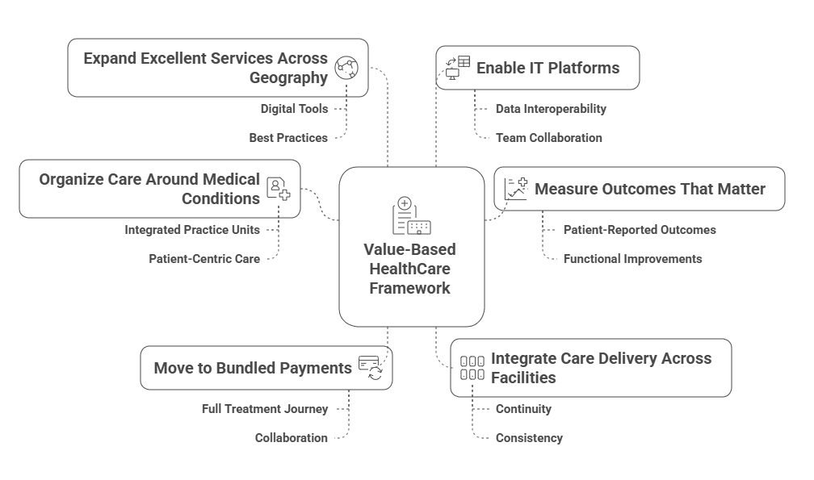

Most chronic care falls short because a person's life and goals aren't in the plan
Most chronic care falls short because a person's life and goals aren't in the plan
In short, chronic care is prescribed, not lived.
We're building a companion for people with chronic illnesses that aligns care to how they live and what they care about
We're building a companion for people with chronic illnesses. It aligns care to how they live and what they care about — not just lab results. It listens to stories, understands goals, and works with doctors to shape meaningful, personalized care plans.
We follow proven methodologies and align with value-based healthcare principles
“Our ultimate goal, after all, is not good death but a good life to the very end.”
Dr. Atul Gawande highlights how simple systems and checklists help teams take the right step at the right time. We follow the same idea: a shared story, small guided steps, and feedback loops.
Measure what matters to patients. Close loops. Reduce avoidable cost. PROMs and adherence signals sit next to clinical data.
The Value Based Framework - The Solution to Modern Health Care
Experience care that's built around your life and goals